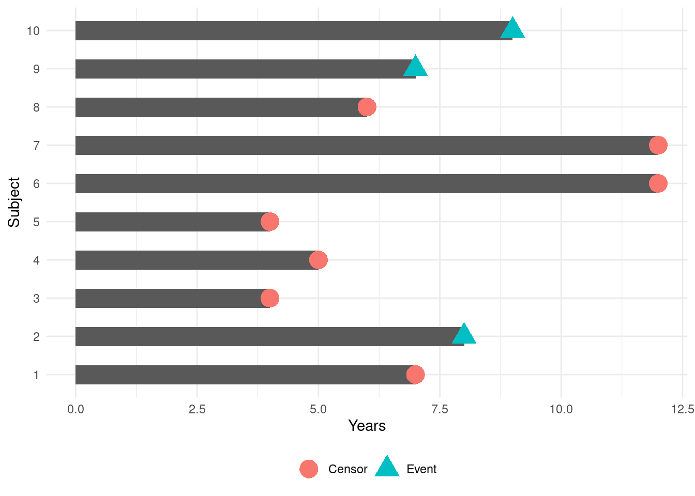
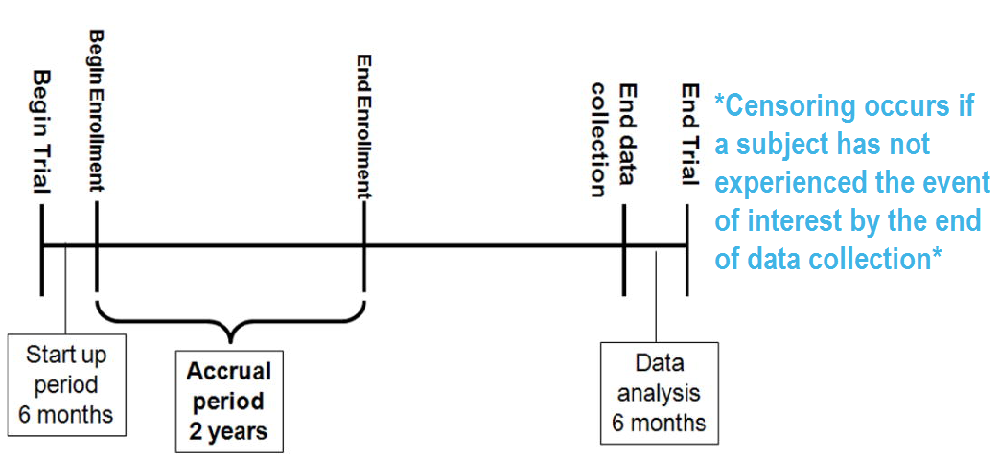
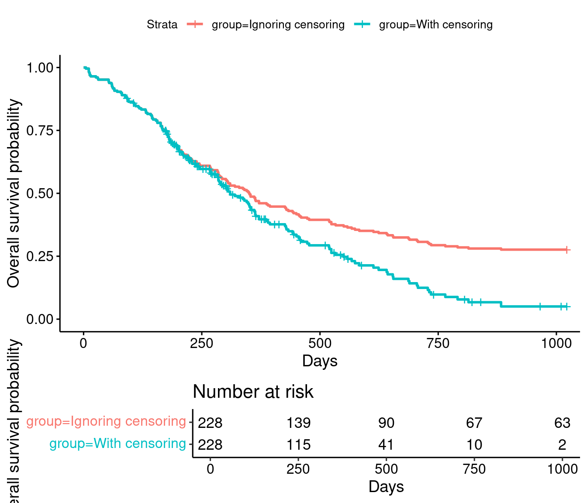
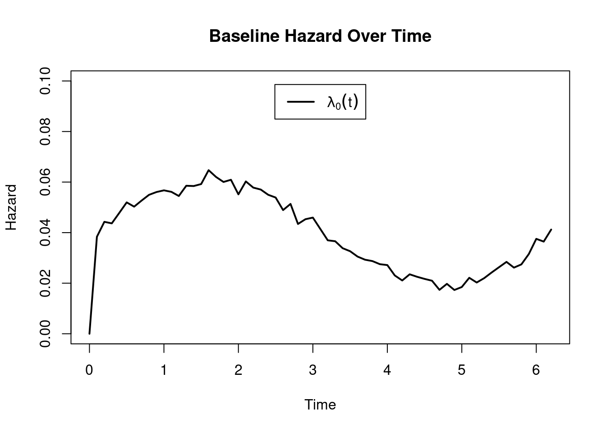
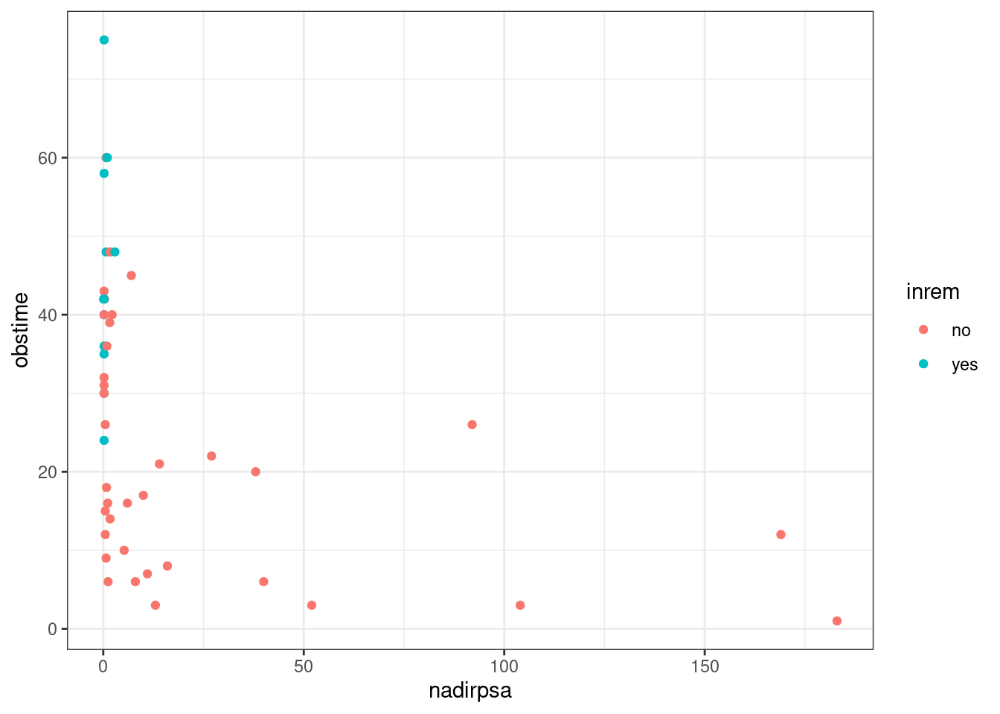

Introduction to Survival Analysis
Lecture 08
October 7, 2024
1 Acknowledgments
Parts of the introductory material is borrowed from Emily Zabor’s introduction to survival analysis in R.
2 Background
In logistic regression, we were interested in studying how risk factors were associated with presence or absence of disease. Sometimes, though, we are interested in how a risk factor or treatment affects time to disease or some other event. Or we may have study dropout, and therefore subjects who we are not sure if they had disease or not. In these cases, logistic regression is not appropriate.
Survival analysis is used to analyze data in which the time until the event is of interest. The response is often referred to as a failure time, survival time, or event time.
2.1 Examples
Time from randomization until cardiovascular death after some treatment intervention
Time from diagnosis until tumor recurrence
Time from diagnosis until AIDS for HIV patients
Time from production until a machine part fails
Note that there needs to be a clearly defined starting and ending point
2.2 The survival time response
- Usually continuous
- May be incompletely determined for some subjects
- i.e. For some subjects we may know that their survival time was at least equal to some time t. Whereas, for other subjects, we will know their exact time of event.
- Incompletely observed responses are censored
- Time is always \(>0\)
2.3 Analysis issues
- If there is no censoring, standard regression procedures could be used
- However, these may be inadequate because
- Time to event is restricted to be positive and has a skewed distribution.
- The probability of surviving past a certain point in time may be of more interest than the expected time of event. Linear regression models means.
- A multiplicative model for the hazard may be a better fit
- May desire an interpretation that is similar to a relative risk
2.4 Censoring
Censoring is present when we have some information about a subject’s event time, but we don’t know the exact event time. For the analysis methods we will discuss to be valid, censoring mechanism must be independent of the survival mechanism.
There are generally three reasons why censoring might occur:
- A subject does not experience the event before the study ends
- A person is lost to follow-up during the study period
- A person withdraws from the study
These are all examples of right-censoring.

RICH JT, NEELY JG, PANIELLO RC, VOELKER CCJ, NUSSENBAUM B, WANG EW. A PRACTICAL GUIDE TO UNDERSTANDING KAPLAN-MEIER CURVES. Otolaryngology head and neck surgery: official journal of American Academy of Otolaryngology Head and Neck Surgery. 2010;143(3):331-336. doi:10.1016/j.otohns.2010.05.007.
To illustrate the impact of censoring, suppose we have the following data:
How would we compute the proportion who are event-free at 10 years?
- Subjects 6 and 7 were event-free at 10 years.
- Subjects 2, 9, and 10 had the event before 10 years.
- Subjects 1, 3, 4, 5, and 8 were censored before 10 years, so we don’t know whether they had the event or not at 10 years. But we know something about them - that they were each followed for a certain amount of time without the event of interest prior to being censored.
Survival analysis techniques provide a way to appropriately account for censored patients in the analysis.
2.5 Types of right-censoring
- Fixed type I censoring occurs when a study is designed to end after C years of follow-up. In this case, everyone who does not have an event observed during the course of the study is censored at C years.
- In random type I censoring, the study is designed to end after C years, but censored subjects do not all have the same censoring time. This is the main type of right-censoring we will be concerned with.
- In type II censoring, a study ends when there is a pre- specified number of events.
Regardless of the type of censoring, we must assume that it is non-informative about the event; that is, the censoring is caused by something other than the impending failure.
2.6 Terminology and notation
- \(T\) denotes the response variable, \(T > 0\)
- The survival function is
\[ S(t) = \textrm{Pr}(T > t) = 1− F(t) \]
Code
plot(function(t) exp(-2*t), 0, 2, ylab="Survival", xlab="Time (years)")
- All subjects are at risk (and event free) at time 0. Thus, the survival estimate at 0 is always 1
- Survival decreases over time. If we observe for a long enough period of time, survival eventually decreases to 0.
- The survival function gives the probability that a subject will survive past time t.
- Specifically, as t ranges from 0 to \(\infty\), the survival function has the following properties
It is non-increasing
At time t = 0, S(t) = 1. In other words, the probability of surviving past time 0 is 1.
At time \(t = \infty\), \(S(t) = S(\infty) = 0\). As time goes to infinity, the survival curve goes to 0.
- In theory, the survival function is smooth. In practice, we observe events on a discrete time scale (days, weeks, etc.)
2.6.1 Hazard, cumulative hazard, and survival
The hazard function, h(t), is the instantaneous rate at which events occur, given no previous events. \[ h(t) = \lim_{{\Delta t} \to 0} \frac{P(t \leq T < t + \Delta t | T \geq t)}{\Delta t} \]
\(T\) is a random variable denoting the time until the event (for example, failure or death) occurs. The numerator in the fraction is the conditional probability that the event occurs in the small time interval \([t, t + Δt]\) given that it has not occurred before time \(t\). The denominator \(\Delta t\) is the length of this time interval. As \(\Delta t\) goes to 0, this ratio gives the instantaneous rate of occurrence of the event at time \(t\), which is the hazard function \(h(t)\).
The cumulative hazard
\[ H(t) = \int_{0}^{t} h(u) du \]
Here, h(u) is the hazard function and u is the variable of integration. This integral represents the accumulated risk of the event (for example, failure or death) over the time interval \([0, t]\).
The relationship between the survival function \(S(t)\) and the cumulative hazard function \(H(t)\)
\[ S(t) = \exp(-H(t)) \]
- Key point: Survival function, cumulative hazard function, and hazard function are interconnected. If we know any one of the functions \(S(t)\), \(H(t)\), or \(h(t)\), we can derive the other two functions.
2.6.2 Outcome definition
To analyze survival data, we need to know the observed time \(Y_i\) and the event indicator \(\delta_i\). For subject \(i\):
Observed time \(Y_i = \min(T_i, C_i)\) where \(T_i\) = event time and \(C_i\) = censoring time
Event indicator \(\delta_i\) = 1 if event observed (i.e. \(T_i \leq C_i\)), = 0 if censored (i.e. \(T_i > C_i\))
3 Non-parametric estimation of the survival curve
In theory the survival function is smooth; in practice we observe events on a discrete time scale.
The survival probability at a certain time, \(S(t)\), is a conditional probability of surviving beyond that time, given that an individual has survived just prior to that time. The survival probability can be estimated as the number of patients who are alive without loss to follow-up at that time, divided by the number of patients who were alive just prior to that time.
The Kaplan-Meier estimate of survival probability at a given time is the product of these conditional probabilities up until that given time
\[ \hat{S}(t) = \prod_{i: t_i \leq t} (1 - \frac{d_i}{n_i}) \]
- \(\hat{S}(t)\) is the estimated survival function at time (t),
- \(t_i\) are the observed event times,
- \(d_i\) is the number of events (e.g. deaths) at time (\(t_i\)),
- \(n_i\) is the number of individuals known to have survived (are at risk) up to time (\(t_i\)).
3.1 Example: The lung dataset
The lung dataset is available from the {survival} package. The data contain subjects with advanced lung cancer from the North Central Cancer Treatment Group. We will focus on the following variables throughout this tutorial:
- time: Observed survival time in days
- status: censoring status 1=censored, 2=dead
- sex: 1=Male, 2=Female
Note that the status is coded in a non-standard way in this dataset. Typically you will see 1=event, 0=censored. Let’s recode it to avoid confusion:
Code
lung <-
lung %>%
mutate(
status = recode(status, `1` = 0, `2` = 1)
)Now we have:
- time: Observed survival time in days
- status: censoring status 0=censored, 1=dead
- sex: 1=Male, 2=Female
Here are the first 6 observations:
Code
head(lung[, c("time", "status", "sex")])| time | status | sex |
|---|---|---|
| 306 | 1 | 1 |
| 455 | 1 | 1 |
| 1010 | 0 | 1 |
| 210 | 1 | 1 |
| 883 | 1 | 1 |
| 1022 | 0 | 1 |
Note: the Surv() function in the {survival} package accepts by default TRUE/FALSE, where TRUE is event and FALSE is censored; 1/0 where 1 is event and 0 is censored; or 2/1 where 2 is event and 1 is censored. Please take care to ensure the event indicator is properly formatted.
3.2 Creating survival objects and curves
The Kaplan-Meier method is the most common way to estimate survival times and probabilities. It is a non-parametric approach that results in a step function, where there is a step down each time an event occurs.
The Surv() function from the {survival} package creates a survival object for use as the response in a model formula. There will be one entry for each subject that is the survival time, which is followed by a + if the subject was censored. Let’s look at the first 10 observations:
Code
Surv(lung$time, lung$status)[1:10] [1] 306 455 1010+ 210 883 1022+ 310 361 218 166 We see that subject 1 had an event at time 306 days, subject 2 had an event at time 455 days, subject 3 was censored at time 1010 days, etc.
The survfit() function creates survival curves using the Kaplan-Meier method based on a formula. Let’s generate the overall survival curve for the entire cohort, assign it to object s1, and look at the structure using str():
Code
s1 <- survfit(Surv(time, status) ~ 1, data = lung)
str(s1)List of 16
$ n : int 228
$ time : num [1:186] 5 11 12 13 15 26 30 31 53 54 ...
$ n.risk : num [1:186] 228 227 224 223 221 220 219 218 217 215 ...
$ n.event : num [1:186] 1 3 1 2 1 1 1 1 2 1 ...
$ n.censor : num [1:186] 0 0 0 0 0 0 0 0 0 0 ...
$ surv : num [1:186] 0.996 0.982 0.978 0.969 0.965 ...
$ std.err : num [1:186] 0.0044 0.00885 0.00992 0.01179 0.01263 ...
$ cumhaz : num [1:186] 0.00439 0.0176 0.02207 0.03103 0.03556 ...
$ std.chaz : num [1:186] 0.00439 0.0088 0.00987 0.01173 0.01257 ...
$ type : chr "right"
$ logse : logi TRUE
$ conf.int : num 0.95
$ conf.type: chr "log"
$ lower : num [1:186] 0.987 0.966 0.959 0.947 0.941 ...
$ upper : num [1:186] 1 1 0.997 0.992 0.989 ...
$ call : language survfit(formula = Surv(time, status) ~ 1, data = lung)
- attr(*, "class")= chr "survfit"Some key components of this survfit object that will be used to create survival curves include:
time: the timepoints at which the curve has a step, i.e. at least one event occurredsurv: the estimate of survival at the correspondingtime
3.3 Kaplan-Meier estimates
Code
summary(s1)Call:
survfit(formula = Surv(time, status) ~ 1, data = lung)
| time | n.risk | n.event | survival | std.err | lower 95% CI | upper 95% CI |
|---|---|---|---|---|---|---|
| 5 | 228 | 1 | 0.995614 | 0.0043763 | 0.987073 | 1.00000 |
| 11 | 227 | 3 | 0.982456 | 0.0086946 | 0.965562 | 0.99965 |
| 12 | 224 | 1 | 0.978070 | 0.0096992 | 0.959244 | 0.99727 |
| 13 | 223 | 2 | 0.969298 | 0.0114246 | 0.947163 | 0.99195 |
| 15 | 221 | 1 | 0.964912 | 0.0121858 | 0.941322 | 0.98909 |
| 26 | 220 | 1 | 0.960526 | 0.0128956 | 0.935581 | 0.98614 |
| 30 | 219 | 1 | 0.956140 | 0.0135621 | 0.929925 | 0.98309 |
| 31 | 218 | 1 | 0.951754 | 0.0141914 | 0.924342 | 0.97998 |
| 53 | 217 | 2 | 0.942982 | 0.0153564 | 0.913360 | 0.97357 |
| 54 | 215 | 1 | 0.938596 | 0.0158990 | 0.907947 | 0.97028 |
| 59 | 214 | 1 | 0.934211 | 0.0164185 | 0.902579 | 0.96695 |
| 60 | 213 | 2 | 0.925439 | 0.0173966 | 0.891962 | 0.96017 |
| 61 | 211 | 1 | 0.921053 | 0.0178584 | 0.886707 | 0.95673 |
| 62 | 210 | 1 | 0.916667 | 0.0183041 | 0.881484 | 0.95325 |
| 65 | 209 | 2 | 0.907895 | 0.0191510 | 0.871125 | 0.94622 |
| 71 | 207 | 1 | 0.903509 | 0.0195543 | 0.865985 | 0.94266 |
| 79 | 206 | 1 | 0.899123 | 0.0199452 | 0.860869 | 0.93908 |
| 81 | 205 | 2 | 0.890351 | 0.0206926 | 0.850704 | 0.93185 |
| 88 | 203 | 2 | 0.881579 | 0.0213982 | 0.840621 | 0.92453 |
| 92 | 201 | 1 | 0.877193 | 0.0217366 | 0.835608 | 0.92085 |
| 93 | 199 | 1 | 0.872785 | 0.0220698 | 0.830583 | 0.91713 |
| 95 | 198 | 2 | 0.863969 | 0.0227102 | 0.820585 | 0.90965 |
| 105 | 196 | 1 | 0.859561 | 0.0230182 | 0.815610 | 0.90588 |
| 107 | 194 | 2 | 0.850700 | 0.0236183 | 0.805645 | 0.89827 |
| 110 | 192 | 1 | 0.846269 | 0.0239073 | 0.800685 | 0.89445 |
| 116 | 191 | 1 | 0.841838 | 0.0241892 | 0.795738 | 0.89061 |
| 118 | 190 | 1 | 0.837407 | 0.0244643 | 0.790805 | 0.88676 |
| 122 | 189 | 1 | 0.832977 | 0.0247329 | 0.785885 | 0.88289 |
| 131 | 188 | 1 | 0.828546 | 0.0249950 | 0.780977 | 0.87901 |
| 132 | 187 | 2 | 0.819684 | 0.0255010 | 0.771197 | 0.87122 |
| 135 | 185 | 1 | 0.815254 | 0.0257452 | 0.766324 | 0.86731 |
| 142 | 184 | 1 | 0.810823 | 0.0259838 | 0.761462 | 0.86338 |
| 144 | 183 | 1 | 0.806392 | 0.0262168 | 0.756611 | 0.85945 |
| 145 | 182 | 2 | 0.797531 | 0.0266670 | 0.746940 | 0.85155 |
| 147 | 180 | 1 | 0.793100 | 0.0268844 | 0.742120 | 0.84758 |
| 153 | 179 | 1 | 0.788669 | 0.0270969 | 0.737309 | 0.84361 |
| 156 | 178 | 2 | 0.779808 | 0.0275074 | 0.727716 | 0.83563 |
| 163 | 176 | 3 | 0.766516 | 0.0280886 | 0.713394 | 0.82359 |
| 166 | 173 | 2 | 0.757654 | 0.0284542 | 0.703888 | 0.81553 |
| 167 | 171 | 1 | 0.753224 | 0.0286307 | 0.699148 | 0.81148 |
| 170 | 170 | 1 | 0.748793 | 0.0288031 | 0.694415 | 0.80743 |
| 175 | 167 | 1 | 0.744309 | 0.0289775 | 0.689627 | 0.80333 |
| 176 | 165 | 1 | 0.739798 | 0.0291509 | 0.684814 | 0.79920 |
| 177 | 164 | 1 | 0.735287 | 0.0293201 | 0.680009 | 0.79506 |
| 179 | 162 | 2 | 0.726209 | 0.0296524 | 0.670357 | 0.78672 |
| 180 | 160 | 1 | 0.721671 | 0.0298124 | 0.665542 | 0.78253 |
| 181 | 159 | 2 | 0.712593 | 0.0301205 | 0.655937 | 0.77414 |
| 182 | 157 | 1 | 0.708054 | 0.0302687 | 0.651146 | 0.76994 |
| 183 | 156 | 1 | 0.703515 | 0.0304131 | 0.646362 | 0.76572 |
| 186 | 154 | 1 | 0.698947 | 0.0305567 | 0.641551 | 0.76148 |
| 189 | 152 | 1 | 0.694349 | 0.0306998 | 0.636712 | 0.75720 |
| 194 | 149 | 1 | 0.689689 | 0.0308454 | 0.631807 | 0.75287 |
| 197 | 147 | 1 | 0.684997 | 0.0309903 | 0.626872 | 0.74851 |
| 199 | 145 | 1 | 0.680273 | 0.0311346 | 0.621907 | 0.74412 |
| 201 | 144 | 2 | 0.670825 | 0.0314108 | 0.612001 | 0.73530 |
| 202 | 142 | 1 | 0.666101 | 0.0315428 | 0.607060 | 0.73088 |
| 207 | 139 | 1 | 0.661308 | 0.0316778 | 0.602046 | 0.72640 |
| 208 | 138 | 1 | 0.656516 | 0.0318087 | 0.597041 | 0.72192 |
| 210 | 137 | 1 | 0.651724 | 0.0319354 | 0.592044 | 0.71742 |
| 212 | 135 | 1 | 0.646897 | 0.0320617 | 0.587013 | 0.71289 |
| 218 | 134 | 1 | 0.642069 | 0.0321838 | 0.581990 | 0.70835 |
| 222 | 132 | 1 | 0.637205 | 0.0323055 | 0.576932 | 0.70378 |
| 223 | 130 | 1 | 0.632303 | 0.0324267 | 0.571838 | 0.69916 |
| 226 | 126 | 1 | 0.627285 | 0.0325553 | 0.566616 | 0.69445 |
| 229 | 125 | 1 | 0.622267 | 0.0326794 | 0.561403 | 0.68973 |
| 230 | 124 | 1 | 0.617248 | 0.0327989 | 0.556198 | 0.68500 |
| 239 | 121 | 2 | 0.607046 | 0.0330406 | 0.545622 | 0.67538 |
| 245 | 117 | 1 | 0.601858 | 0.0331631 | 0.540246 | 0.67050 |
| 246 | 116 | 1 | 0.596669 | 0.0332806 | 0.534879 | 0.66560 |
| 267 | 112 | 1 | 0.591342 | 0.0334071 | 0.529360 | 0.66058 |
| 268 | 111 | 1 | 0.586014 | 0.0335282 | 0.523851 | 0.65555 |
| 269 | 110 | 1 | 0.580687 | 0.0336440 | 0.518352 | 0.65052 |
| 270 | 108 | 1 | 0.575310 | 0.0337594 | 0.512806 | 0.64543 |
| 283 | 104 | 1 | 0.569778 | 0.0338850 | 0.507090 | 0.64022 |
| 284 | 103 | 1 | 0.564247 | 0.0340045 | 0.501385 | 0.63499 |
| 285 | 101 | 2 | 0.553073 | 0.0342367 | 0.489882 | 0.62442 |
| 286 | 99 | 1 | 0.547487 | 0.0343437 | 0.484148 | 0.61911 |
| 288 | 98 | 1 | 0.541900 | 0.0344446 | 0.478426 | 0.61380 |
| 291 | 97 | 1 | 0.536314 | 0.0345396 | 0.472716 | 0.60847 |
| 293 | 94 | 1 | 0.530608 | 0.0346402 | 0.466879 | 0.60304 |
| 301 | 91 | 1 | 0.524777 | 0.0347468 | 0.460909 | 0.59750 |
| 303 | 89 | 1 | 0.518881 | 0.0348531 | 0.454876 | 0.59189 |
| 305 | 87 | 1 | 0.512917 | 0.0349590 | 0.448778 | 0.58622 |
| 306 | 86 | 1 | 0.506953 | 0.0350576 | 0.442694 | 0.58054 |
| 310 | 85 | 2 | 0.495024 | 0.0352327 | 0.430570 | 0.56913 |
| 320 | 82 | 1 | 0.488987 | 0.0353165 | 0.424444 | 0.56335 |
| 329 | 81 | 1 | 0.482951 | 0.0353927 | 0.418334 | 0.55755 |
| 337 | 79 | 1 | 0.476837 | 0.0354687 | 0.412150 | 0.55168 |
| 340 | 78 | 1 | 0.470724 | 0.0355369 | 0.405981 | 0.54579 |
| 345 | 77 | 1 | 0.464611 | 0.0355973 | 0.399827 | 0.53989 |
| 348 | 76 | 1 | 0.458497 | 0.0356500 | 0.393688 | 0.53398 |
| 350 | 75 | 1 | 0.452384 | 0.0356950 | 0.387564 | 0.52804 |
| 351 | 74 | 1 | 0.446271 | 0.0357323 | 0.381455 | 0.52210 |
| 353 | 73 | 2 | 0.434044 | 0.0357839 | 0.369282 | 0.51016 |
| 361 | 70 | 1 | 0.427844 | 0.0358059 | 0.363119 | 0.50411 |
| 363 | 69 | 2 | 0.415442 | 0.0358258 | 0.350838 | 0.49194 |
| 364 | 67 | 1 | 0.409242 | 0.0358236 | 0.344722 | 0.48584 |
| 371 | 65 | 2 | 0.396650 | 0.0358108 | 0.332321 | 0.47343 |
| 387 | 60 | 1 | 0.390039 | 0.0358190 | 0.325790 | 0.46696 |
| 390 | 59 | 1 | 0.383428 | 0.0358167 | 0.319280 | 0.46046 |
| 394 | 58 | 1 | 0.376817 | 0.0358041 | 0.312789 | 0.45395 |
| 426 | 55 | 1 | 0.369966 | 0.0358026 | 0.306047 | 0.44723 |
| 428 | 54 | 1 | 0.363115 | 0.0357891 | 0.299329 | 0.44049 |
| 429 | 53 | 1 | 0.356263 | 0.0357636 | 0.292633 | 0.43373 |
| 433 | 52 | 1 | 0.349412 | 0.0357261 | 0.285960 | 0.42694 |
| 442 | 51 | 1 | 0.342561 | 0.0356764 | 0.279311 | 0.42013 |
| 444 | 50 | 1 | 0.335710 | 0.0356147 | 0.272685 | 0.41330 |
| 450 | 48 | 1 | 0.328716 | 0.0355528 | 0.265924 | 0.40633 |
| 455 | 47 | 1 | 0.321722 | 0.0354776 | 0.259188 | 0.39934 |
| 457 | 46 | 1 | 0.314728 | 0.0353890 | 0.252478 | 0.39233 |
| 460 | 44 | 1 | 0.307575 | 0.0353002 | 0.245617 | 0.38516 |
| 473 | 43 | 1 | 0.300422 | 0.0351965 | 0.238785 | 0.37797 |
| 477 | 42 | 1 | 0.293269 | 0.0350778 | 0.231982 | 0.37075 |
| 519 | 39 | 1 | 0.285749 | 0.0349751 | 0.224802 | 0.36322 |
| 520 | 38 | 1 | 0.278230 | 0.0348537 | 0.217658 | 0.35566 |
| 524 | 37 | 2 | 0.263190 | 0.0345541 | 0.203477 | 0.34043 |
| 533 | 34 | 1 | 0.255449 | 0.0343939 | 0.196200 | 0.33259 |
| 550 | 32 | 1 | 0.247467 | 0.0342330 | 0.188698 | 0.32454 |
| 558 | 30 | 1 | 0.239218 | 0.0340712 | 0.180950 | 0.31625 |
| 567 | 28 | 1 | 0.230674 | 0.0339086 | 0.172932 | 0.30770 |
| 574 | 27 | 1 | 0.222131 | 0.0337119 | 0.164978 | 0.29908 |
| 583 | 26 | 1 | 0.213587 | 0.0334803 | 0.157090 | 0.29040 |
| 613 | 24 | 1 | 0.204688 | 0.0332471 | 0.148879 | 0.28142 |
| 624 | 23 | 1 | 0.195788 | 0.0329711 | 0.140748 | 0.27235 |
| 641 | 22 | 1 | 0.186889 | 0.0326514 | 0.132700 | 0.26321 |
| 643 | 21 | 1 | 0.177989 | 0.0322866 | 0.124735 | 0.25398 |
| 654 | 20 | 1 | 0.169090 | 0.0318752 | 0.116858 | 0.24467 |
| 655 | 19 | 1 | 0.160190 | 0.0314154 | 0.109070 | 0.23527 |
| 687 | 18 | 1 | 0.151291 | 0.0309049 | 0.101376 | 0.22578 |
| 689 | 17 | 1 | 0.142392 | 0.0303413 | 0.093779 | 0.21620 |
| 705 | 16 | 1 | 0.133492 | 0.0297215 | 0.086286 | 0.20652 |
| 707 | 15 | 1 | 0.124593 | 0.0290419 | 0.078901 | 0.19674 |
| 728 | 14 | 1 | 0.115693 | 0.0282982 | 0.071632 | 0.18686 |
| 731 | 13 | 1 | 0.106794 | 0.0274852 | 0.064487 | 0.17685 |
| 735 | 12 | 1 | 0.097894 | 0.0265966 | 0.057477 | 0.16673 |
| 765 | 10 | 1 | 0.088105 | 0.0256754 | 0.049767 | 0.15598 |
| 791 | 9 | 1 | 0.078315 | 0.0246182 | 0.042294 | 0.14502 |
| 814 | 7 | 1 | 0.067127 | 0.0235064 | 0.033793 | 0.13334 |
| 883 | 4 | 1 | 0.050346 | 0.0228480 | 0.020685 | 0.12253 |
- Applying the formula
\[ \hat{S}(t) = \prod_{i: t_i \leq t} (1 - \frac{d_i}{n_i}) \]
\(S(0) = 1\)
\(S(5) = 1*(1-1/228) = 0.9956\)
\(S(11) = 1*(1-1/228)*(1-3/227) = 0.9825\)
etc.
Number at risk is decrease by events or censored observations
Most early times are events, so number at risk is decreasing because of events. – The first censored observation is at 92 days. Here, the risk set decreases by the number of events and number censored (find this time point in the table to verify yourself)
3.4 Kaplan-Meier plot
Code
ggsurvplot(s1, data=lung, risk.table = TRUE)- Plot gives estimate of survival over time
- Confidence interval is conditional on a given survival time (rather than being a confidence band for the entire survival curve)
- Risk table gives the number of subjects at risk at specified time points
3.5 Estimating \(x\)-year survival
One quantity often of interest in a survival analysis is the probability of surviving beyond a certain number of years, \(x\).
For example, to estimate the probability of surviving to \(1\) year, use summary with the times argument (Note: the time variable in the lung data is actually in days, so we need to use times = 365.25)
Code
summary(survfit(Surv(time, status) ~ 1, data = lung), times = 365.25)Call:
survfit(formula = Surv(time, status) ~ 1, data = lung)
| time | n.risk | n.event | survival | std.err | lower 95% CI | upper 95% CI |
|---|---|---|---|---|---|---|
| 365.25 | 65 | 121 | 0.40924 | 0.035824 | 0.34472 | 0.48584 |
We find that the \(1\)-year probability of survival in this study is 41%.
The associated lower and upper bounds of the 95% confidence interval are also displayed.
The \(1\)-year survival probability is the point on the y-axis that corresponds to \(1\) year on the x-axis for the survival curve.
What happens if you use a “naive” estimate? Here “naive” means that the patients who were censored prior to 1-year are considered event-free and included in the denominator.
121 of the 228 patients in the lung data died by \(1\) year so the “naive” estimate is calculated as:
\[\Big(1 - \frac{121}{228}\Big) \times 100 = 47\%\] You get an incorrect estimate of the \(1\)-year probability of survival when you ignore the fact that 42 patients were censored before \(1\) year.
Recall the correct estimate of the \(1\)-year probability of survival, accounting for censoring using the Kaplan-Meier method, was 41%.
Ignoring censoring leads to an overestimate of the overall survival probability. Imagine two studies, each with 228 subjects. There are 165 deaths in each study. Censoring is ignored in one (blue line), censoring is accounted for in the other (yellow line). The censored subjects only contribute information for a portion of the follow-up time, and then fall out of the risk set, thus pulling down the cumulative probability of survival. Ignoring censoring erroneously treats patients who are censored as part of the risk set for the entire follow-up period.

3.6 Estimating median survival time
Another quantity often of interest in a survival analysis is the average survival time, which we quantify using the median. Survival times are not expected to be normally distributed so the mean is not an appropriate summary.
We can obtain the median survival directly from the survfit object:
Code
survfit(Surv(time, status) ~ 1, data = lung)| records | n.max | n.start | events | median | 0.95LCL | 0.95UCL |
|---|---|---|---|---|---|---|
| 228 | 228 | 228 | 165 | 310 | 285 | 363 |
We see the median survival time is 310 days The lower and upper bounds of the 95% confidence interval are also displayed.
Median survival is the time corresponding to a survival probability of \(0.5\):
3.7 Non-parametric test for comparing survival times between groups
The most common test for comparing survival by groups is the log-rank test
At each event time, constructs a 2x2 table of observed events and number at risk for each group
Compare observed to expected number of events under the null hypothesis that the event rates are the same in each group
A Chi-squared test stratifying over all event times
A test of the entire survival curve
We get the log-rank p-value using the
survdifffunction. For example, we can test whether there was a difference in survival time according to sex in thelungdata:
Code
survdiff(Surv(time, status) ~ sex, data = lung)| N | Observed | Expected | (O-E)^2/E | (O-E)^2/V | |
|---|---|---|---|---|---|
| sex=1 | 138 | 112 | 91.582 | 4.5523 | 10.327 |
| sex=2 | 90 | 53 | 73.418 | 5.6785 | 10.327 |
- We can also add the p-value to Kaplan-Meier plot by sex
Code
fit.sex <- survfit(Surv(time, status) ~ sex, data=lung)
ggsurvplot(fit.sex, data=lung, pval=TRUE)
There was a significant difference in overall survival according to sex in the lung data, with a p-value of p = ‘round(1-pchisq(survdiff(Surv(time, status) ~ sex, data = lung)$chisq, 1),3)’.
4 Semi-parametric regression (Cox proportional hazards model)
The preceding approach was very flexible in that it makes no parametric assumptions above the shape of the survival curve
This can work for well for categorical predictors and/or descriptive purposes
In a clinical trial where we have randomized to treatment groups (and presumably have minimized confounding), the Kaplan-Meier method and log-rank test can be the primary analysis method
Extensions are needed if we want to consider continuous predictors and multivariable models
Would be nice to maintain flexibility and have a readily interpret
Statistical methods
Regression models we have studied to date are generally not valid for survival data
Because of right censoring, survival time cannot be analyzed as a continuous outcome (e.g. linear regression)
Because of unequal length of followup, survival (yes/no) cannot be analyzed using logistic regression
In the presence of censored data, the usual descriptive statistics are not appropriate
Sample mean, sample median, simple proportions, sample standard deviation should not be used
Proper descriptives should be based on the Kaplan Meier estimates
Specialized regression models are needed with censored data
(Cox) Proportional hazards model
Considers the instantaneous risk of failure at each time among those subjects who have not failed
The term “proportional hazards” assumes that the ratio of these instantaneous failure rates is constant in time between groups
Proportional hazards (Cox) regression treats the survival distribution within a group semi-parametrically
The baseline hazard is estimated without making any distributional assumptions
The hazard ratio is the parameter of interest and is used to compare groups
4.1 Proportional Hazards Regression
Looks at odds of choosing subjects relative to prevalence in the population
Can be derived as estimating the odds ratio of an event at each time that an event occurs
Proportional hazards model averages the odds ratio across all observed event times
If the odds ratio is constant over time between two groups, such an average results in a precise estimate of the hazard ratio
Borrowing information
Uses other groups to make estimates in groups with sparse data
Borrows information across predictor groups
- Intuitively, 67 and 69 year olds would provide some relevant information about 68 year olds
Also borrows information over time
- Relative risk for an event at each time is presumed to be the same under proportional hazards
4.2 The simple PH regression model
Modeling the log hazard over time as a function of covariates \(X\)
“Baseline hazard” is unspecified. Baseline hazard is similar to an intercept
Model \(\textrm{log}(\lambda(t | X_i)) = \textrm{log}(\lambda_{0}(t)) + \beta_1 \times X_i\) \(X_i = 0\) log hazard at \(t\) is \(\textrm{log}(\lambda_{0}(t))\) \(X_i = x\) log hazard at \(t\) is \(\textrm{log}(\lambda_{0}(t)) + \beta_1 \times x\) \(X_i = x+1\) log hazard at \(t\) is \(\textrm{log}(\lambda_{0}(t))+ \beta_1 \times x + \beta_1\) Model on the hazard scale is found by exponentiating parameters
Model \(\lambda(t | X_i) = \lambda_{0}(t) \times e^{\beta_1 \times X_i}\) \(X_i = 0\) hazard at \(t\) is \(\lambda_{0}(t)\) \(X_i = x\) hazard at \(t\) is \(\lambda_{0}(t) \times e^{\beta_1 \times x}\) \(X_i = x+1\) hazard at \(t\) is \(\lambda_{0}(t) \times e^{\beta_1 \times x} \times e^{\beta_1}\) Interpretation of the model
No intercept
- Generally ignore the baseline hazard
Slope parameter
Hazard ratio found by exponentiating the slope from the PH regression: \(\textrm{exp}(\beta_1)\)
Hazard ratio compared groups differing in the value of the predictor by 1 unit
Relationship to survival
Hazard function determines the survival function
Hazard \(\lambda(t | X_i) = \lambda_{0}(t) \times e^{\beta_1 \times X_i}\) Cumulative Hazard \(\Lambda(t | X_i) = \displaystyle\int^t_0 \lambda_{0}(u) \times e^{\beta_1 \times X_i} \ du\) Survival Function \(S(t | X_i) = e^{-\Lambda(t|X_i)} = [S_0(t)]^{e^{\beta_1 \times X_i}}\)
4.3 Descriptive Plots
4.3.1 Hazard
Code
set.seed(55)
x <- seq(0,2*pi,by=0.1)
lambda0 <- (2*sin(x) + 4 + rnorm(length(x), 0, .2)) / 100
lambda0[1] <- 0
plot(x, lambda0, type='l', xlab="Time", ylab="Hazard", ylim=c(0,.1), main="Baseline Hazard Over Time", lwd=2)
legend("top", inset=0.05, lty=1, expression(lambda[0] (t)), lwd=2)
4.3.2 Cumulative hazard
Code
plot(x, cumsum(lambda0), type='l', xlab="Time", ylab="Cumulative Hazard", ylim=c(0,3), main="Baseline Cumulative Hazard over Time", lwd=2)
legend("top", inset=0.05, lty=1, expression(Lambda[0] (t) == integral(lambda[0] (u)*du, 0, t)), lwd=2)4.3.3 Survival
Code
plot(x, exp(-cumsum(lambda0)), type='l', xlab="Time", ylab="Survival", ylim=c(0,1), main="Baseline Survival over Time", lwd=2)
legend("top", inset=0.05, lty=1, expression(exp(-Lambda[0] (t))), lwd=2)4.3.4 Proportional hazards assumption
Code
lambda1 <- lambda0*1.5
plot(x, lambda0, type='l', xlab="Time", ylab="Hazard", ylim=c(0,.1), main="Proportional Hazards for Two Groups", lwd=2)
lines(x, lambda1, col="Red", lwd=2)
legend("topright", inset=0.05, lty=1, c(expression(lambda[0] (t)), expression(lambda[1] (t) == 1.5*lambda[0] (t))), lwd=2, col=c("Black","Red"))4.3.5 Proportional hazards assumption on log scale
Code
plot(x, log(lambda0), type='l', xlab="Time", ylab="Log Hazard", ylim=c(-4.5,-2), main="Proportional Hazards for Two Groups, log scale", lwd=2)
lines(x, log(lambda1), col="Red", lwd=2)
legend("topright", inset=0.05, lty=1, c(expression(log(lambda[0] (t))), expression(log(lambda[1] (t)) == log(1.5) + log(lambda[0] (t)))), lwd=2, col=c("Black","Red"))Comments on plots
Baseline hazard can follow any functional form. This is the “non-parametric” part of the Cox proportional hazards model
The cumulative hazard is a non-decreasing function that starts at 0 at time 0. It is bounded by \(\infty\).
Survival is a function of the cumulative hazard. Survival is 1 at time 0 and decreases over time. It is bounded by \(0\) and \(1\).
For a dichotomous predictor variable (X is 0 or 1), the proportional hazards assumption is that \(\lambda_1 (t) = e^{\beta_1} \lambda_0 (t)\)
In the plots I illustrated \(e^{\beta_1} = 1.5\) (\(\beta_1 = 0.4054\)).
On the hazard scale, this corresponds to \(\lambda_1(t)\) always being \(1.5\) times larger than \(\lambda_0(t)\).
On the log hazard scale, this corresponds to \(log(\lambda_1(t))\) always being \(log(1.5) = 0.4054\) units larger than \(log(\lambda_0(t))\).
The proportional hazards assumption is the “parametric” part of the Cox proportional hazards model. Hence, the Cox proportional hazards model is referred to as being “semi-parametric”.
4.4 Software
Stata commands
“stset time event-indicator”
“stcox predictor, [robust]”
R functions
“Surv(time, event-indicator)”
“coxph(Surv(time, event-indicator) ~ predictor)”
There is a robust option in coxph for calcluating robust standard error estimates. In my opinion the assumption of proportional hazards in the Cox model rarely (never?) holds completely, so the robust option can be a good default.
Lin, D. Y., and L. J. Wei. “The Robust Inference for the Cox Proportional Hazards Model.” Journal of the American Statistical Association 84, no. 408 (1989): 1074–78. https://doi.org/10.2307/2290085.
4.5 Example Analysis
4.5.1 Descriptives
Prognostic values of nadir PSA relative to time in remission
PSA dataset: 50 men who received hormonal treatment for advanced prostate cancer
Followed at least 24 months for clinical progression, but exact followup varies from subject to subject
Nadir PSA: lowest level of serum prostate specific antigen achieved post treatment
Scatterplots of censored data are not scientifically meaningful
It is best to not generate them unless you do something to indicate the censored dataset
We can label censored data, but have to remember that the true value may be anywhere larger than that
Code
library(foreign)
library(rms)
psa <- read.dta(file="data/psa.dta")
psa$nadirpsa <- psa$dirpsa
ggplot(psa, aes(y=obstime, x=nadirpsa, color=inrem)) + geom_point() + theme_bw()
Characterization of plot
Outliers: Can’t tell
First order trends
Downward trending slop
No censoring at high nadir PSAs (high nadir PSA are all early events)
Second order trend: Must be curvilinear (but how much?)
Variability within groups: Highest variability within lowest PSA groups
4.5.2 Regression model
- The usual coding of the outcome is survival is 1 for an event and 0 for a censored observation.
Code
# First, create an indicator variable for those who relapsed at any time point
psa$relapse <- as.numeric(psa$inrem=="no")
with(psa, table(relapse, inrem))| no | yes | |
|---|---|---|
| 0 | 0 | 14 |
| 1 | 36 | 0 |
Create a relapse variable to indicate if a subject has relapsed or not
Define the outcome using “Surv(obstime, relapse)”
obstime: Time to event (either time to relapse or time to censored)
relapse: Failure indicator variable
Code
m1 <- coxph(Surv(obstime, relapse) ~ nadirpsa, data=psa, robust=TRUE)
m1| coef | exp(coef) | robust se | z | p | |
|---|---|---|---|---|---|
| nadirpsa | 0.015717 | 1.0158 | 0.0036713 | 4.281 | 2e-05 |
Likelihood ratio test=11.78 on 1 df, p=0.0005989028 n= 50, number of events= 36
Code
summary(m1)Call:
coxph(formula = Surv(obstime, relapse) ~ nadirpsa, data = psa, robust = TRUE)
| n | number of events |
|---|---|
| 50 | 36 |
| coef | exp(coef) | se(coef) | robust se | z | Pr(>|z|) | |
|---|---|---|---|---|---|---|
| nadirpsa | 0.015717 | 1.0158 | 0.0037497 | 0.0036713 | 4.281 | 1.8609e-05 |
| exp(coef) | exp(-coef) | lower .95 | upper .95 | |
|---|---|---|---|---|
| nadirpsa | 1.0158 | 0.98441 | 1.0086 | 1.0232 |
| Concordance | se |
|---|---|
| 0.75706 | 0.03671 |
| test | df | p | |
|---|---|---|---|
| Likelihood ratio test | 11.78 | 1 | 0 |
| Wald test | 18.33 | 1 | 0 |
| Score (logrank) test | 24.30 | 1 | 0 |
| Robust score test | 6.90 | 1 | 0 |
(Note: the likelihood ratio and score tests assume independence of observations within a cluster, the Wald and robust score tests do not).
Code
exp(confint.default(m1))| 2.5 % | 97.5 % | |
|---|---|---|
| nadirpsa | 1.0086 | 1.0232 |
Code
# 10-unit change in nadir PSA
exp(coef(m1)*10)nadirpsa
1.170192 Code
exp(10*confint.default(m1))| 2.5 % | 97.5 % | |
|---|---|---|
| nadirpsa | 1.0889 | 1.2575 |
4.5.3 Interpretation of output
By default, R gives the hazard ratio and the coefficient for comparing groups who differ by one unit in the nadir psa covariate
- \(\textrm{Hazard ratio} = e^{\textrm{coeff}}\)
\(\textrm{Hazard ratio} = 1.015^{\Delta nadir}\)
Estimated hazard ratio for two groups differing by 1 in nadir PSA is found by exponentiating the slope
Groups 1 unit higher nadir PSA have instantaneous event rate \(1.0157\) fold higher (1.6% higher)
Groups 10 units higher nadir PSA have instantaneous event rate \(1.015^{10} = 1.166\) fold higher (16.6% higher)
4.5.4 Robust standard errors
R allows for robust standard errors in the coxph function. Note that other functions for fitting Cox models in R may or may not have this functionality.
“From proportional hazards regression analysis, we estimate that for each 1 ng/ml unit difference in nadir PSA, this risk of relapse is \(1.6\%\) higher in the group with the higher nadir PSA. This estimate is highly statistically significant (\(p < 0.001\)). A 95% CI suggests that this observation is not unusual if a group that has a 1 ng/ml higher nadir PSA might have risk of relapse that was anywhere from \(0.9\%\) higher to \(2.3\%\) higher than the group with lower nadir PSA.”
4.6 Inference with PH Regression
The ideas of Signal and Noise found in simple linear regression do not translate well to PH regression
- We do not tend to quantify an error distribution with PH regression
Valid statistical inference (CIs, p-values) about associations requires three general assumptions
Assumptions about approximately Normal distributions for the parameter estimates
Large N
Need for either robust standard errors or classical regression
Definition of large depends on the underlying probability distribution
Assumptions about independence of observations
Classical regression: Independence of all observation
Robust standard errors: Correlated observations within identified clusters
Assumptions about variance of observations within groups
Classical regression: Mean-variance relationship for binary data
Proportional hazards considers the hazard of event at every time
Hence in order to satisfy this requirement, need proportional hazards and linearity of predictor
Robust standard errors
Allows unequal variance across groups
Hence, do not need linearity of predictor or proportional hazards
Valid statistical inference (CIs, p-values) about hazard of response in specific groups requires a further assumption
Assumption about the adequacy of the linear model
If we are trying to borrow information about the log hazards from neighboring groups, and we are assuming a straight line relationship, the straight line needs to be true
Needed for either classical or robust standard errors
Note that we can model transformations of the measured predictor
We rarely make inference about within group survival probabilities using the proportional hazards model
Sometimes estimated survival curves are used descriptively
Use estimates of the baseline survival function
Exponentiate the baseline survival to find survival curve for specific covariate patterns
Relationship to survival
Hazard function determines the survival function.
For the Cox model
Hazard \(\lambda(t | X_i) = \lambda_{0}(t) \times e^{\beta_1 \times X_i}\) Cumulative Hazard \(\Lambda(t | X_i) = \displaystyle\int^t_0 \lambda_{0}(u) \times e^{\beta_1 \times X_i} \ du\) Survival Function \(S(t | X_i) = e^{-\Lambda(t|X_i)} = [S_0(t)]^{e^{\beta_1 \times X_i}}\)
4.6.1 Log-transformed nadir PSA
Suppose that you know based on prior experience or consultation with collaborators…
A constant difference in PSA would not be expected to confer the same increased risk
- Comparing 4 ng/ml to 10 ng/ml is not the same as comparing 104 ng/ml to 110 ng/ml
A multiplicative effect on risk might be better
Same increase in risk for each doubling of nadir PSA
Achieve this model by using log transformed nadir PSA
Code
psa$lognadirpsa <- log(psa$nadirpsa)
m2 <- coxph(Surv(obstime, relapse) ~ lognadirpsa, data=psa, robust=TRUE)
m2| coef | exp(coef) | robust se | z | p | |
|---|---|---|---|---|---|
| lognadirpsa | 0.43724 | 1.5484 | 0.072861 | 6.001 | 2e-09 |
Likelihood ratio test=24.01 on 1 df, p=9.601094e-07 n= 50, number of events= 36
Code
summary(m2)Call:
coxph(formula = Surv(obstime, relapse) ~ lognadirpsa, data = psa, robust = TRUE)
| n | number of events |
|---|---|
| 50 | 36 |
| coef | exp(coef) | se(coef) | robust se | z | Pr(>|z|) | |
|---|---|---|---|---|---|---|
| lognadirpsa | 0.43724 | 1.5484 | 0.087699 | 0.072861 | 6.001 | 2e-09 |
| exp(coef) | exp(-coef) | lower .95 | upper .95 | |
|---|---|---|---|---|
| lognadirpsa | 1.5484 | 0.64581 | 1.3424 | 1.7861 |
| Concordance | se |
|---|---|
| 0.75706 | 0.03671 |
| test | df | p | |
|---|---|---|---|
| Likelihood ratio test | 24.01 | 1 | 0 |
| Wald test | 36.01 | 1 | 0 |
| Score (logrank) test | 29.02 | 1 | 0 |
| Robust score test | 19.76 | 1 | 0 |
(Note: the likelihood ratio and score tests assume independence of observations within a cluster, the Wald and robust score tests do not).
Code
exp(confint.default(m2))| 2.5 % | 97.5 % | |
|---|---|---|
| lognadirpsa | 1.3424 | 1.7861 |
Hazard ratio is \(1.55\) for a \(e\)-fold difference in nadir PSA (\(e = 2.7183\))
It is more easy to understand doubling, tripling, 5-fold, 10-fold increases
For doubling: \(\textrm{HR} = 1.54^{log(2)} = 1.35\)
For 5-fold: \(\textrm{HR} = 1.54^{log(5)} = 1.99\)
Can similarly transform the upper and lower limits of the confidence interval
The confidence interval and statistical test given in the output is called a Wald test. Other tests (Score, Likelihood Ratio) are also possible.
All tests are asymptotically equivalent
The Wald test is easiest to obtain, but generally performs the poorest in small sample sizes. It is based on the coefficient estimate and standard error.
The Likelihood Ratio test performs the best in small samples. We will discuss it later, including how to obtain the test using post-estimation commands.
The Score test is not bad in small samples, but is often hard to obtain from software. It is exactly equal to the logrank test for binary outcomes and categorical predictors.
4.7 Review: Interpretation of Slopes
4.7.1 Additive models
- Identity link function
| Parameter | Approach |
|---|---|
| Means | Linear regression |
Interpretation of non-transformed slope: \(\theta_X = \beta_0 + \beta_1 \times X\)
\(\beta_1\) : (Average) difference in summary measure between groups per 1 unit difference in \(X\)
\(\Delta \times \beta_1\) : (Average) difference in summary measure between groups per \(\Delta\) unit difference in \(X\)
Interpretation with log transformed slope: \(\theta_X = \beta_0 + \beta_1 \times \textrm{log}(X)\)
- \(\textrm{log}(k) \times \beta_1\) : (Average) difference in summary measure between groups per \(k\)-fold difference in \(X\)
4.7.2 Multiplicative models
- Log link function
| Parameter | Approach |
|---|---|
| Geometric means | Linear regression on log scale |
| Odds | Logistic regression |
| Rates | Poisson regression |
| Hazards | Proportional Hazards (Cox) regression |
Interpretation of non-transformed slope: \(\textrm{log}(\theta_X) = \beta_0 + \beta_1 \times X\)
\(e^{\beta_1}\) : (Average) ratio of summary measure between groups per 1 unit difference in \(X\)
\(e^{\Delta \times \beta_1}\) : (Average) ratio of summary measure between groups per \(\Delta\) unit difference in \(X\)
Interpretation with log transformed slope: \(\textrm{log}(\theta_X) = \beta_0 + \beta_1 \times \textrm{log}(X)\)
- \(e^{\textrm{log}(k) \times \beta_1} = k^{\beta_1}\) : (Average) ratio of summary measure between groups per \(k\)-fold difference in \(X\)
5 Parametric regression
Fully-parametric models are less common than the semi-parametric Cox model because they are less flexible
However, if they are a good fit to a particular dataset, they may
Estimate fewer parameters
Allow for better predictions (as long as the error distribution is correctly specified!)
Allow for comparison of survival estimates rather than hazards (accelerated failure time)
Two fundamental models used to describe the way that some factor might affect time to event
Proportional hazards (aka Cox model)
Accelerated failure time (less popular)
Accelerated Failure Time model
Comparisons across groups based on survival times rather than hazards
Assume that a factor causes some subjects to spend their lifetime too fast
Basic idea: For every year in a reference group’s lives, the other group ages “k” years
e.g. 1 human year is about 7 dog years, so a 70 year old human is the same age as a 10 year old dog
In AFT terminology, the probability that a human survives beyond 70 years is the same as the probability that a dog survives beyond 10 years
From the framework, dogs are accelerating through life 7 times faster than a human. Equivalently, the lifespan of a human is stretched out to be 7 times longer than that of a dog.
Assumes that ratios of quantiles of survival distribution are constant across groups
- e.g. report median ratios: It takes 50% longer for half of the treated group to die than half of the control group
AFT models include the parametric exponential, Weibull, and lognormal models
5.1 Weibull model
The Weibull model can also be interpreted as either a proportional hazard or accelerated failure time model. It is one of the few models that makes both the proportional hazards and accelerated failure time assumptions.
The Weibull model accommodates monotonically increasing or decreasing hazards
The following gives the relationship between the hazard function, Survival function, distribution function and cumulative distribution function for four different shape parameters following a Weibull distribution with scale parameter held constant at 2
Code
plot.data <- expand.grid(
t = seq(0.1, 10, .1),
loc = c(.5, 1, 1.5, 2)
) %>%
mutate(
`F (CDF)` = pweibull(t, shape = loc, scale = 2),
`f (PDF)` = dweibull(t, shape = loc, scale = 2),
S = 1 - `F (CDF)`,
`h = f / S` = flexsurv::hweibull(t, shape = loc, scale = 2),
loc = paste("shape:", loc)
)
plot.data <- expand.grid(t=seq(0.1, 10, .1),
loc=c(.5, 1, 1.5, 2))
plot.data2 <- with(plot.data,
data.frame(t=rep(t,4),
loc=rep(loc,4),
value=NA,
type=rep(1:4,each=nrow(plot.data))))
plot.data2$value[plot.data2$type==1] <-
pweibull(plot.data2$t[plot.data2$type==1], shape = plot.data2$loc[plot.data2$type==1], scale = 2)
plot.data2$value[plot.data2$type==2] <-
dweibull(plot.data2$t[plot.data2$type==2], shape = plot.data2$loc[plot.data2$type==2], scale = 2)
plot.data2$value[plot.data2$type==3] <-
1-pweibull(plot.data2$t[plot.data2$type==3], shape = plot.data2$loc[plot.data2$type==3], scale = 2)
plot.data2$value[plot.data2$type==4] <-
flexsurv::hweibull(plot.data2$t[plot.data2$type==4], shape = plot.data2$loc[plot.data2$type==4], scale = 2)
plot.data2$type <- factor(plot.data2$type, levels=1:4, labels=c("F (CDF)","f (PDF)", "S = 1 - F", "h = f / S" ))
plot.data2$loc2 <- paste("scale =", plot.data2$loc)
ggplot(plot.data2, aes(x=t, y=value)) + geom_line() + facet_grid(type ~ loc2, scales="free_y") + theme_bw()- Weibull hazard and cumulative hazard at time \(t\) with shape \(p\) and scale \(\lambda\) \((\lambda > 0)\)
\[h(t) = λpt^{(p−1)}\]
\(p\) is a shape parameter
\(p>1\) is an increasing hazard over time
\(p=1\) is a constant hazard
\(p<1\) is a decreasing hazard
We can model the scale as a function of covariates
\[\textrm{where } \lambda = \textrm{exp}(\beta_0 + \beta_1 X_1 + \ldots + \beta_p X_p)\]
A special case of the Weibull model is the Exponential model. The Weibull reduces to the Exponential when the shape parameter is 1 (\(p=1\)). A shape parameter of 1 assumes the hazard is constant over time, and the cumulative hazard increases linearly with time.
- This provides a method for checking if the Weibull can be reduced to an Exponential model. If we estimate the cumulative hazard without making parametric assumptions and plot versus time, we can see if it is increasing at a constant rate.
Nelson-Aalen estimator of the cumulative hazard (non-parametric)
\[\hat{H}(t)=\sum_{i:t_i\leq t}\frac{d_i}{n_i}\]
where \(d_i\) is the number of events at time \(t_i\), and \(n_i\) is the number of individuals at risk just before time \(t_i\)
Apply this to the lung cancer dataset
Code
# Calculate the non-parametric estimate of the cumulative hazard
n.risk <- summary(s1)$n.risk
n.evt <- summary(s1)$n.event
time <- summary(s1)$time
# Plot cumulative hazard versus time
na.haz <- n.risk/n.evt
na.cumhaz <- cumsum(na.haz)
plot(time, na.cumhaz)- Cumulative hazard is increasing over time, but not at a constant rate. The Weibull may be appropriate, but the Exponential is not appropriate.
5.2 Weibull example
5.2.1 Compare fit of Weibull (parametric) to Kaplan-Meier (non-parametric)
- Is the Weibull model a reasonable fit to the observed survival estimates?
Code
fit2 <- survreg(Surv(time, status) ~ sex, data = lung, dist = "weibull")
pct <- 1:98/100
ptime1 <- predict(fit2, newdata=data.frame(sex=1), type='quantile',
p=pct)
ptime2 <- predict(fit2, newdata=data.frame(sex=2), type='quantile',
p=pct)
# Kaplan-Meier fit
plot(fit.sex, col=1:2, ylab="Survival")
lines(ptime1, 1-pct, col=1,lty=2)
lines(ptime2, 1-pct, col=2,lty=2)
legend("topright", col=c(1,1,2,2), lty=c(1,2,1,2),
c("Kaplan-Meier, Male","Weibull, Male","Kaplan-Meier, Female","Weibull, Female"))
5.2.2 Interpretation of Weibull parameters
The Weibull model is both a proportional hazards and accelerated failure time model
How the model is parameterized will either give a proportional hazards or accelerated failure time interpretation
For the Weibull proportional hazards model with one covariate ($X$)
\[ h(t) = \lambda p t^{p-1} \]
\[ \lambda = \textrm{exp}(\beta_1 X) \]
For the Weibull accelerated failure time model with one covariate ($X$)
\[ S(t) = exp(-\lambda t^p) \]
Solve for \(t\)
\[ t = (-\textrm{ln} S(t))^{1/p} \times \frac{1}{\lambda^{1/p}} \]
\[ \frac{1}{\lambda^{1/p}} = \textrm{exp}(\alpha_0 + \alpha_1 X) \]
R default is to give the proportional hazards parameterization. The hazard ratio is found by exponentiation of the slope as we have done with other models
Compare to females, males are at a 1.48 fold increased risk (hazard) of death.
Code
summary(fit2)Call:
survreg(formula = Surv(time, status) ~ sex, data = lung, dist = “weibull”)
| Value | Std. Error | z | p | |
|---|---|---|---|---|
| (Intercept) | 5.48858 | 0.179029 | 30.6574 | 0.0000e+00 |
| sex | 0.39558 | 0.127649 | 3.0989 | 1.9421e-03 |
| Log(scale) | -0.28092 | 0.061918 | -4.5370 | 5.7073e-06 |
Scale= 0.755088
| Loglik.model. | Loglik.intercept.only. |
|---|---|
| -1148.7 | -1153.9 |
Chisq= 10.399 on 1 degrees of freedom, p= 0.0013
Number of Newton-Raphson Iterations: 5
n= 228
Code
exp(coef(fit2))(Intercept) sex
241.914353 1.485242 Code
exp(confint.default(fit2))| 2.5 % | 97.5 % | |
|---|---|---|
| (Intercept) | 170.3223 | 343.5989 |
| sex | 1.1565 | 1.9074 |
- To obtain the accelerated failure time interpretation, the Weibull model needs to be reparameterized so the output coefficients can be directly interpreted. We also have to exponeniate the coefficient estimates as we are comparing fold differences in survival quantiles.
Code
m.aft <- aftreg(formula = Surv(time, status) ~ sex, data = lung,
dist = "weibull")
m.aftCall:
aftreg(formula = Surv(time, status) ~ sex, data = lung, dist = “weibull”)
| Covariate | W.mean | Coef | Time-Accn | se(Coef) | Wald p |
|---|---|---|---|---|---|
| sex | 1.4384 | -0.39532 | 0.67347 | 0.12761 | 0.0019497 |
| Covariate | W.mean | Coef | Time-Accn | se(Coef) | Wald p |
|---|---|---|---|---|---|
| log(scale) | 5.48905 | 0.178983 | 0.0000e+00 | ||
| log(shape) | 0.28121 | 0.061906 | 5.5564e-06 |
Baseline life expectancy: 222.71
Events 165
Total time at risk 69593
Max. log. likelihood -1148.7
LR test statistic 10.4
Degrees of freedom 1
Overall p-value 0.001261
Code
exp(confint(m.aft))| 2.5 % | 97.5 % | |
|---|---|---|
| sex | 0.52444 | 0.86485 |
| log(scale) | 170.41657 | 343.72614 |
| log(shape) | 1.17337 | 1.49563 |
Acceleration factor (males compared to females) is 0.673
- Comparison of survival times, with males having shorter survival times at all percentiles
Code
# 25th, 50th, and 75th percentiles of survival time in males
ptime1[pct%in%c("0.25","0.5","0.75")][1] 140.2460 272.4383 459.8036Code
# 25th, 50th, and 75th percentiles of survival time in females
ptime2[pct%in%c("0.25","0.5","0.75")][1] 208.2993 404.6370 682.9198Code
# Ratios is constant (accelerated failure-time assumption)
ptime1[pct%in%c("0.25","0.5","0.75")] / ptime2[pct%in%c("0.25","0.5","0.75")][1] 0.6732908 0.6732908 0.6732908- Summary interpretation of both PH and AFT
From the Weibull regression model, we can estimate both the hazard ratio and acceleration factor.
Comparing males to females, males have a 1.48 fold increased hazard (risk) of death compared to females. We are 95% confident the true hazard ratio is between a 1.16 and 1.91 fold increase. Since the hazard ratio does not contain 1, males are at a significantly increased hazard of death compared to females.
Comparing males to females, males have a median (or any other quantile) survival times that is 0.673 times the median (or other quantile) survival time in females. We are 95% confident that the true acceleration factor is between 0.52 and 0.85.
The statements are more awkward when the acceleration factor is less than 1. We could flip the estimates (e.g \(0.673^{-1}\)) and say that the median (or other quantile) survival time in females is 1.49 times longer than it is in males to be less awkward.
- Note that a hazard ratio greater than one is harmful for survival while an acceleration factor greater than one is beneficial for survival. One is the null values for both interpretations.
5.3 Other parametric models
Example shown here focused on a Weibull model as an introduction. We identified the Exponential distribution (a special case of the Weibull) is not a good fit.
Other (parametric) distributions are possible. Some have a proportional hazards interpretation (only) or an accelerated failure time interpretation (only). Other lack either of these interpretations, but are more flexible in how they model the hazard function. There is a trade-off between interpretability and flexibility.
Goal is to pick a distribution with a corresponding hazard (cumulative hazard) that is appropriate model for your data, will be reproducible, and is ultimately interpretable.
Cox model is a good choice if you want to model associations and not concern yourself with the shape of the hazard function. This is a very common situation and why the Cox model is widely used.
If goal is prediction, appropriate parametric models (perhaps with additional flexibility) may outperform the Cox model
Bayesian approach to fitting survival models are most often based on parametric approaches
It is relatively straight forward to fit Bayesian models using parametric distributions like Weibull
Models that attempt to recreate a Cox-like models are more complex because of the flexibility of the baseline hazard function